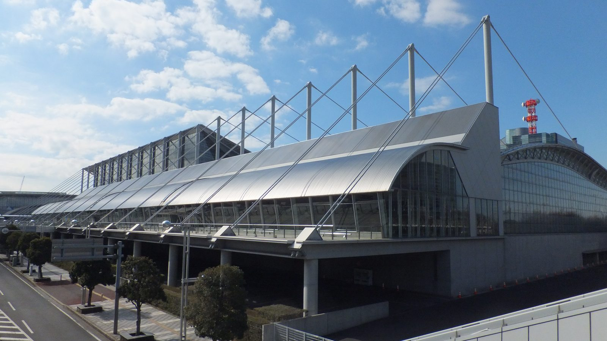

Venue · Convention centre
Makuhari Messe
- Type
- Convention centre
- Location
- Chiba, Japan
- Address
- 2-1, Nakase, Mihama-ku, Chiba-city, 261-8550, Japan
- Capacity
- 9,000 capacity
- Exhibition space
- 75,000 m²
- Halls
- Official organisers’ guide: site area 210,000 m²; total exhibition area 75,000 m². Exhibition Halls 1–8 54,000 m² (divisible); Halls 9–11 18,000 m² (Hall 9 9,000 m²; Halls 10 and 11 4,500 m² each); Makuhari Event Hall arena 3,098 m², up to 9,000 people. International Conference Hall / Convention Hall 1,600 people, plus 22 conference rooms.
- Official website
- https://www.m-messe.co.jp/en/
About
Chiba’s international exhibition and convention complex, operated by Makuhari Messe, Inc. Official total exhibition area is 75,000 m². Official breakdown: Halls 1–8 54,000 m² and Halls 9–11 18,000 m² (72,000 m²), with the Makuhari Event Hall arena officially 3,098 m²; 54,000 + 18,000 + 3,098 = 75,098, two figures above the official 75,000 total, so exhibition_sqm follows the official ‘total exhibition area is 75,000 m²’ wording rather than a summed remainder. capacity_max_delegates is the official Event Hall figure of up to 9,000 people. Official convention hall capacity is 1,600 people with 22 additional conference rooms. Coordinates are the atlas precise pin.
Spaces
| Name | Type | Capacity | Area |
|---|---|---|---|
| Exhibition Halls 1–8 | — | — | 54,000 m² |
| Exhibition Hall 9 | — | — | 9,000 m² |
| Exhibition Hall 10 | — | — | 4,500 m² |
| Exhibition Hall 11 | — | — | 4,500 m² |
| Makuhari Event Hall | — | 9,000 | 3,098 m² |
| Convention Hall | — | 1,600 | — |
Upcoming events
- Interop Tokyo 2027Chiba, JapanTech
- CEATEC 2027Chiba, JapanTech
- Japan IT Week Autumn 2027Chiba, JapanTech
- NexTech Week Tokyo 2027 Autumn (AI EXPO TOKYO)Chiba, JapanAI
- Tokyo Game Show 2027Chiba, JapanCulture
- Jump Festa 2027Chiba, JapanCulture
- COUNTDOWN JAPAN 26/27Chiba, JapanMusic
- Tokyo Comic Con 2026Chiba, JapanCulture
- Wonder Festival 2027 WinterChiba, JapanCulture
Sources
- Official source — https://www.m-messe.co.jp/en/organizers/guide/
- Official source — https://www.m-messe.co.jp/en/